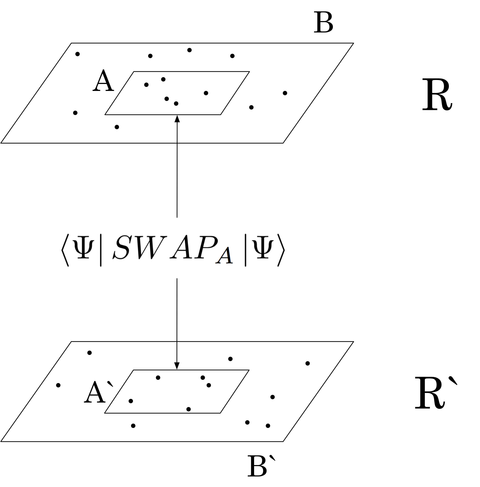

The Renyi entanglement entropy (S2) of a bipartite system is a measure of the entanglement between two groups of particles. We build, from scratch, a Markov chain Monte Carlo algorithm in C++ capable of calculating S2 for a given trial wave function. The algorithm is verified through analytic and numerical calculations on the free-fermion wave function and then applied to the Laughlin states that describe the quantum Hall effect. For the nominal filling fraction ν = 1 we construct a regime to extract the topological entanglement entropy γ and calculate its value to be γ = 0.0878 ± 0.018. Afterwards, we explore for what reasons this differs from the field theoretic value γ = 0 and suggest solutions to improve the accuracy of our results going forward.
The entire program was written in C++, self-taught after coming from a Java background. The main algorithm comprises of ~ 200 lines that follow the procedure seen in the flowchart below.
The large sets of data produced by the algorithm are written to file via helper methods. From here they are imported into Python for data analysis, with both 2d and 3d graphs generated using the matplotlib library.
After graduating I have continued to work on this research, applying my improved computational techniques to extract the topological constant with increasing accuracy. As a result, I am proud to say the findings of my work are now close to publication, which will hopefully be available by the end of 2018.